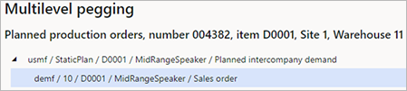
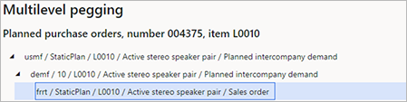

Intercompany-Planung
Important
Dynamics 365 for Finance and Operations hat sich zu speziell entwickelten Anwendungen entwickelt, mit denen Sie bestimmte Geschäftsfunktionen verwalten können. Weitere Informationen zu diesen Änderungen finden Sie im Dynamics 365-Lizenzierungshandbuch.
Für einige Organisationen hängen logistische Operationen von anderen juristischen Entitäten (Firmen) in der Organisation ab. Diese Vorgänge werden über Intercompany-Verkäufe und -Einkäufe abgewickelt, da jede juristische Entität einen eigenen Kontenplan hat.
Dieses Thema beschreibt die Intercompany-Planung und erklärt, wie Sie die Intercompany-Planung mit der Planungsoptimierung in Microsoft Dynamics 365 Supply Chain Management konfigurieren.
In diesem Thema werden die folgenden wichtigen Intercompany-Begriffe verwendet:
- Aufwärts - Eine relative Referenz in einer Firma oder Lieferkette. Er zeigt die Bewegung in Richtung des Rohstofflieferanten an.
- Abwärts - Ein relativer Verweis in einer Firma oder Lieferkette. Er zeigt die Bewegung in Richtung des Kunden an.
- Geplanter Intercompany-Bedarf - Geplanter Bedarf für ein Produkt in einem Unternehmen, basierend auf dem geplanten Bedarf für das Produkt von einem nachgelagerten Unternehmen.
In der Produktprogrammplanung kann ein Plan in einem Unternehmen einen geplanten Intercompany-Bedarf enthalten, der sich auf geplante Aufträge aus einem Plan in einem anderen Unternehmen bezieht. Diese Funktionalität ist nützlich, da sie einen vollständigen Überblick über die geplanten Aufträge in allen Unternehmen bietet. Sie stellt auch sicher, dass alle erforderlichen geplanten Lieferaufträge erstellt werden, ohne dass jedoch Planaufträge für den Intercompany-Bedarf umgewandelt werden müssen.
Wenn Sie die Produktprogrammplanung von einem Masterplan aus durchführen, der geplanten nachgelagerten Bedarf enthält, werden geplante Einkaufsbestellungen von den entsprechenden Intercompany-Lieferanten als Bedarf in den Plan aufgenommen.
Erforderliches Einrichten
Um die Intercompany-Planung zu verwenden, müssen Sie Ihr System wie folgt vorbereiten:
- Die relevanten Produkte müssen in allen relevanten Firmen freigegeben sein. Weitere Informationen finden Sie unter Konfigurieren und verwenden Sie Intercompany-Handel in Dynamics 365 Supply Chain Management auf Microsoft Learn.
- Der nachgelagerte Bedarf muss durch Einkäufe bei einem Lieferanten gedeckt werden, der eine Intercompany-Beziehung zum vorgelagerten Unternehmen und entsprechende Standard-Bestandsdimensionen (Standort und Lagerort) beim Kunden hat. Weitere Informationen finden Sie unter Konfigurieren und verwenden Sie Intercompany-Handel in Dynamics 365 Supply Chain Management auf Microsoft Learn.
- Der Masterplan im vorgelagerten Unternehmen muss den geplanten nachgelagerten Bedarf enthalten, und das entsprechende Unternehmen und der Masterplan müssen in den nachgelagerten Plänen angegeben sein.
Geplanten Downstream-Bedarf einschließen
Gehen Sie wie folgt vor, um Ihren Masterplan so zu konfigurieren, dass er den geplanten nachgelagerten Bedarf enthält.
Wechseln Sie zu Produktprogrammplanung > Einrichtung > Pläne > Produktprogrammpläne.
Wählen oder erstellen Sie einen Masterplan.
Legen Sie auf dem Inforegister Intercompany-Planung die folgenden Felder fest:
- Geplanten nachgelagerten Bedarf einbeziehen - Legen Sie diese Option auf Ja fest, um die Intercompany-Planung für den Masterplan zu aktivieren.
- Nachgelagerte Pläne - Wenn Sie die Option Geplanten nachgelagerten Bedarf einbeziehen auf Ja festlegen, verwenden Sie die Symbolleiste und das Raster, um die gewünschten Produktprogrammplanungen von anderen Unternehmen hinzuzufügen.
Firmenübergreifende Bedarfsverursacher mit Hilfe des mehrstufigen Bedarfsverursachers
Bei mehrstufigen Bedarfsverursachern können Sie den Bedarfsverursacher firmenübergreifend anzeigen, um die ursprüngliche Bedarfsquelle zu sehen, die durch ein Angebot abgedeckt wird.
Führen Sie die folgenden Schritte aus, um Informationen zum mehrstufigen Bedarfsverursacher anzuzeigen.
- Gehen Sie zu Produktprogrammplanung > Gesamtplanung > Geplante Aufträge.
- Wählen oder öffnen Sie einen Planauftrag.
- Wählen Sie im Aktivitätsbereich auf der Registerkarte Ansicht in der Gruppe Bedarf die Option Mehrstufiger Bedarfsverursacher.
Intercompany-Beispiel, an dem zwei Firmen beteiligt sind
In diesem Beispiel wird in der Firma USMF ein geplanter Fertigungsauftrag erstellt, um einen Auftrag in der Firma DEMF zu decken. In USMF ist der direkte Bedarf ein geplanter Intercompany-Bedarf. Um diesen Bedarf in USMF erscheinen zu lassen, wird die Produktprogrammplanung zuerst in DEMF und dann in USMF ausgeführt.
Die folgende Abbildung zeigt, wie dieses Beispiel auf der Seite Multilevel Bedarfsverursacher für den geplanten Produktionsauftrag erscheinen könnte.

Intercompany-Beispiel, an dem drei Firmen beteiligt sind
Für dieses Beispiel wird eine geplante Einkaufsbestellung in der USMF-Firma erstellt, um einen Auftrag in der FRRT-Firma zu decken. In den Firmen DEMF und USMF ist der direkte Bedarf ein geplanter Intercompany-Bedarf. Um diesen Bedarf in USMF erscheinen zu lassen, wird die Produktprogrammplanung zuerst in FRRT, dann in DEMF und schließlich in USMF ausgeführt.
Die folgende Abbildung zeigt, wie dieses Beispiel auf der Seite Multilevel Bedarfsverursacher für den geplanten Produktionsauftrag erscheinen könnte.
